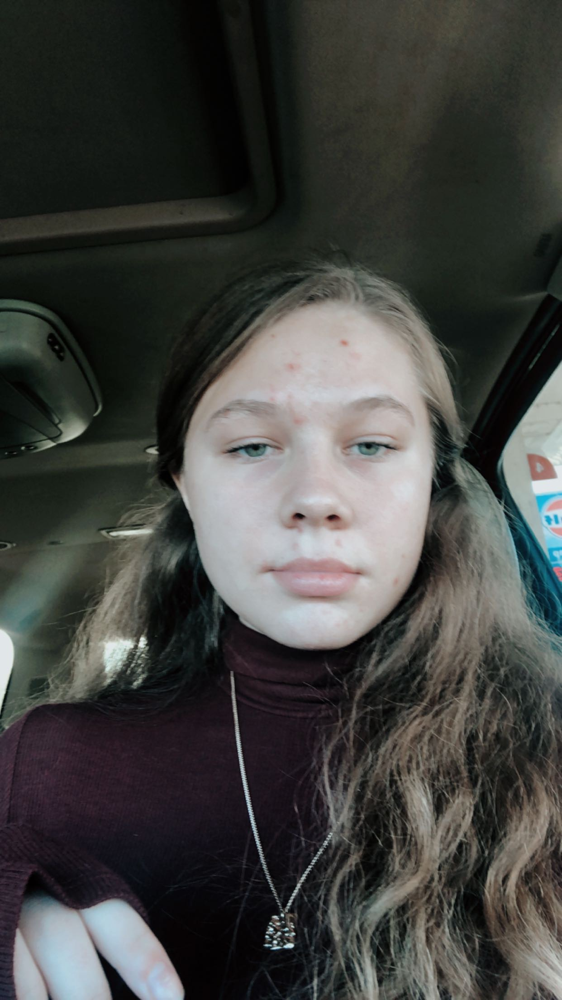

I first got into programming during a summer school course right before my 5th grade year. I love moving block to make logic gates, and solving the little puzzles. I would've never expected to accomplish so much towards my goal since.
My freshman year of High School I learned blocky, python, and some javascript. During my sophomore year of high school I learned purely Java. My junior year, there was no computer science courses for me to take, so I didn't take any. Although I did send emails, and push for cybersecurity to be taught at my high school.
My senior year I had taken cybersecurity and technology and logistics with STL Caps at the same time. So this year I learned linux, git/github, and other types of Operating Systems. I also learned HTML, and CSS. I had never taken a website developement course ever, and so this was a new challenge for me. I got to relearn javascript and learn svelte. This year, I really learned more about actual applications of computer science and the different types of jobs that it offers with that major. Before all I knew was that I liked programming, now I know that some posistions that I would look into for internships, and when I graduate college.